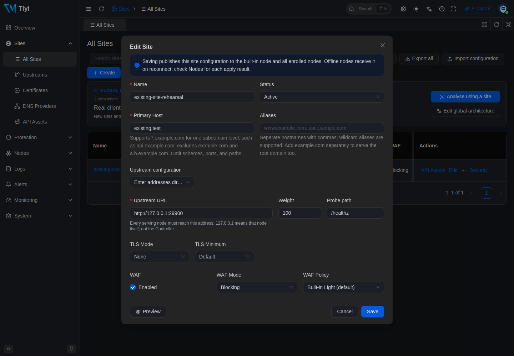
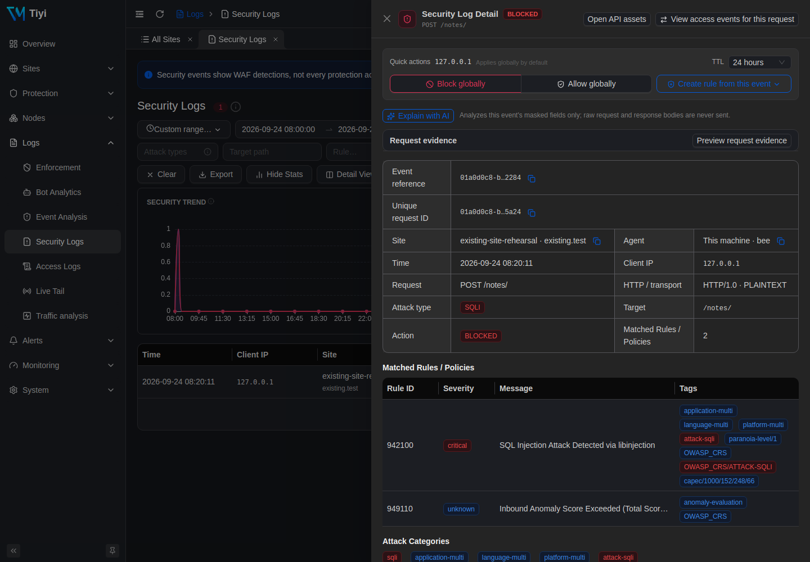
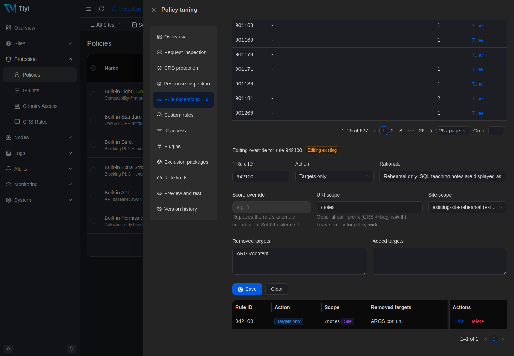

Add Tiyi to an existing Nginx site
Keep Nginx at the edge and place Tiyi between it and the original application. Rehearse on separate ports before deciding how to connect your own service. This guide includes complete examples, actual admin screenshots and a way to restore the original request path.
Before: request → Nginx :29180 → example app :29900
After: request → Nginx :29180 → Tiyi :29181 → example app :29900
The Nginx and application processes here are isolated examples. They do not change an existing Nginx service, ports 80/443 or DNS. The app returns JSON; it neither executes SQL nor implements authentication. Form and file requests exercise the proxy and WAF path.
1. Prepare a separate rehearsal directory
Use one Linux host with tiyi, nginx, python3 and curl installed. If needed, follow manual installation to install the signed Tiyi binary, stopping before sudo tiyi install --now. If Tiyi is already installed, use its binary with the separate temporary state below; do not replace the installation.
Run all commands in the same Bash terminal on that host. Ports 29180, 29181, 29188, 29443 and 29900 must be available. If you change a port, update its configuration and requests together.
umask 077
LAB_DIR=$(mktemp -d /tmp/tiyi-existing-site.XXXXXX)
mkdir -p "$LAB_DIR/nginx"
printf 'Rehearsal directory: %s\n' "$LAB_DIR"
curl -fsSL https://www.tiyisec.com/docs/templates/existing-site-origin.py \
-o "$LAB_DIR/origin.py"
curl -fsSL https://www.tiyisec.com/docs/templates/existing-site-nginx.conf \
-o "$LAB_DIR/nginx/nginx.conf"
printf 'proxy_pass http://127.0.0.1:29900;\n' > "$LAB_DIR/nginx/route.conf"
cp "$LAB_DIR/nginx/route.conf" "$LAB_DIR/nginx/route.before.conf"
Downloads: example application and complete Nginx rehearsal configuration. Its route.conf contains only the upstream address and is the only ingress file changed during cutover and restoration.
2. Confirm the original request path
python3 "$LAB_DIR/origin.py" > "$LAB_DIR/origin.log" 2>&1 &
ORIGIN_PID=$!
nginx -p "$LAB_DIR/nginx/" -c nginx.conf -t
nginx -p "$LAB_DIR/nginx/" -c nginx.conf
curl -i -H 'Host: existing.test' http://127.0.0.1:29180/
Expect 200 and "origin": "existing-app" in the body. If this fails, inspect origin.log and nginx/error.log in the rehearsal directory before continuing. The Host header supplies existing.test directly; no DNS change is needed.
3. Start Tiyi on a separate port
printf '{}\n' > "$LAB_DIR/tiyi.yaml"
tiyi --config "$LAB_DIR/tiyi.yaml" run \
--addr 0.0.0.0:29188 \
--state-db "$LAB_DIR/state.db" \
--admin-socket "$LAB_DIR/admin.sock" \
--caddy-admin-socket "$LAB_DIR/caddy.sock" \
--proxy-http-addr 127.0.0.1:29181 \
--proxy-https-addr 127.0.0.1:29443 \
> "$LAB_DIR/tiyi.log" 2>&1 &
TIYI_PID=$!
for attempt in {1..30}; do
[ -S "$LAB_DIR/admin.sock" ] && break
sleep 1
done
t() { tiyi --admin-socket "$LAB_DIR/admin.sock" "$@"; }
t system health
Continue only after the health check succeeds. Otherwise read tiyi.log. The explicit temporary configuration and separate admin socket keep these CLI commands directed at the rehearsal instance. t is a shortcut in this terminal, used throughout the remaining steps.
Open http://SERVER_IP:29188, using the actual host IP and allowing this port only from your management network. The first username and password appear in tiyi.log; keep that directory and log private. Proxy ports bind only to loopback. This HTTP rehearsal does not need a certificate.
4. Point Tiyi at the original application
t site create --name existing-site-rehearsal \
--host existing.test \
--upstream-url http://127.0.0.1:29900 \
--tls none
Keep the returned site.id for later queries. With no policy specified, the new site uses built-in Light with blocking enabled. You can instead enter the same values in Sites → All Sites → Create; choose one method.
The upstream is application port 29900, not Nginx ingress port 29180. Pointing it back to the ingress creates a proxy loop after cutover.
{kind=link}

First check the candidate Tiyi ingress directly, bypassing Nginx:
# Normal request: expect 200
curl -i -H 'Host: existing.test' http://127.0.0.1:29181/
# Send this probe only to your own rehearsal site: expect 403
curl -i --get -H 'Host: existing.test' \
--data-urlencode 'q=1 UNION SELECT password FROM users' \
http://127.0.0.1:29181/
The original ingress on 29180 still reaches the application directly. A 421 from Tiyi calls for checking Host/site matching; a 502 calls for checking the application process, upstream address and health.
5. Switch Nginx's upstream and check ordinary requests
printf 'proxy_pass http://127.0.0.1:29181;\n' > "$LAB_DIR/nginx/route.conf"
nginx -p "$LAB_DIR/nginx/" -c nginx.conf -t && \
nginx -p "$LAB_DIR/nginx/" -c nginx.conf -s reload
Once reload completes, send these through Nginx. Each command prints the HTTP status:
# Normal request → 200
curl -sS -o /dev/null -w '%{http_code}\n' \
-H 'Host: existing.test' http://127.0.0.1:29180/
# Ordinary form → 200; this app does not perform real authentication
curl -sS -o /dev/null -w '%{http_code}\n' \
-H 'Host: existing.test' --data 'username=demo&password=demo-only' \
http://127.0.0.1:29180/login
# Small upload → 200; the app does not save the file
printf 'Tiyi upload rehearsal\n' > "$LAB_DIR/upload.txt"
curl -sS -o /dev/null -w '%{http_code}\n' \
-H 'Host: existing.test' -F "file=@$LAB_DIR/upload.txt" \
http://127.0.0.1:29180/upload
# SQL injection pattern → 403
curl -sS -o /dev/null -w '%{http_code}\n' --get \
-H 'Host: existing.test' \
--data-urlencode 'q=1 UNION SELECT password FROM users' \
http://127.0.0.1:29180/
# XSS pattern → 403
curl -sS -o /dev/null -w '%{http_code}\n' --get \
-H 'Host: existing.test' \
--data-urlencode 'q=<script>alert(1)</script>' \
http://127.0.0.1:29180/
These 200 responses show that the rehearsal requests traversed the proxy chain. They do not establish compatibility for your actual authentication, payment callbacks or upload workflow. A real application's successful response may be 201, 204 or a redirect; compare it with the original business outcome.
6. Rehearse a narrow exception for a teaching note
Suppose /notes/ accepts SQL teaching text in a content field and the application handles it safely as text. The application owner must confirm that requirement; a blocked request alone is not evidence of a false positive.
payload="1' OR '1'='1"
curl -i -H 'Host: existing.test' \
--data-urlencode "content=$payload" \
http://127.0.0.1:29180/notes/
Our rehearsal returned 403, matching detection rule 942100 and aggregate score rule 949110. In Logs → Security Logs, search for the response's X-Request-Id and set the time range to include the request. Confirm the HTTP response first; retained detail availability depends on retention and sampling settings.
# Use your returned site ID and the request ID from that response
SITE_ID='replace-with-your-site-id'
REQUEST_ID='replace-with-your-request-id'
t log security list --site-id "$SITE_ID" --unique-id "$REQUEST_ID"
t site get "$SITE_ID"
{kind=link}

Take waf.policyId from site get. Remove only the content target from rule 942100, scoped to this rehearsal site and the /notes path tree. Keep other checks in place:
POLICY_ID='replace-with-this-sites-policy-id'
t rule override upsert "$POLICY_ID" \
--site-id "$SITE_ID" \
--crs-rule-id 942100 \
--scope /notes \
--remove-target ARGS:content \
--rationale 'Rehearsal: SQL teaching notes are safely handled as text'
Keep the returned override.id for removal. The corresponding UI is Protection → Policies → Tune → Rule exceptions. Review the rule, site, URI scope and removed target.
{kind=link}

# The rehearsal's legitimate teaching text → 200
curl -sS -o /dev/null -w '%{http_code}\n' -H 'Host: existing.test' \
--data-urlencode "content=$payload" http://127.0.0.1:29180/notes/
# Same field, another path → 403
curl -sS -o /dev/null -w '%{http_code}\n' -H 'Host: existing.test' \
--data-urlencode "content=$payload" http://127.0.0.1:29180/search
# Same path, another field → 403
curl -sS -o /dev/null -w '%{http_code}\n' -H 'Host: existing.test' \
--data-urlencode "q=$payload" http://127.0.0.1:29180/notes/
The current scope includes /notes and its child paths, excluding /notes-extra; those boundaries were also checked. It does not restrict the HTTP method. Real requests may match different or multiple rules. Review them individually; disabling aggregate score rule 949110 or globally allowing a client IP is not a substitute for an application-specific exception.
7. Remove the exception and restore the original path
First remove the newly created exception. Repeating the teaching-text request should return 403 again:
OVERRIDE_ID='replace-with-the-created-override-id'
t rule override delete "$OVERRIDE_ID"
curl -sS -o /dev/null -w '%{http_code}\n' -H 'Host: existing.test' \
--data-urlencode "content=$payload" http://127.0.0.1:29180/notes/
Then restore Nginx's original upstream. This differs from detection mode: requests now bypass this Tiyi instance entirely.
cp "$LAB_DIR/nginx/route.before.conf" "$LAB_DIR/nginx/route.conf"
nginx -p "$LAB_DIR/nginx/" -c nginx.conf -t && \
nginx -p "$LAB_DIR/nginx/" -c nginx.conf -s reload
# Wait for reload, then confirm the ordinary response → 200
curl -i -H 'Host: existing.test' http://127.0.0.1:29180/
# Stop only the Tiyi process started in this terminal; Nginx should still return 200
kill "$TIYI_PID"
curl -i -H 'Host: existing.test' http://127.0.0.1:29180/
Stop the remaining rehearsal processes when finished:
nginx -p "$LAB_DIR/nginx/" -c nginx.conf -s quit
kill "$ORIGIN_PID"
Keep LAB_DIR's configuration, logs and state for review. Use only the PIDs from this terminal session; do not use stale PIDs or killall nginx.
8. What the rehearsal actually returned
On 2026-09-24, the following checks ran on Linux amd64 with a Tiyi binary reporting v3.8.0, built-in Light / CRS 4.25.1, Nginx 1.24.0 and the Python app above. Screenshots come from that same isolated instance.
| Check | Actual HTTP status |
|---|---|
| Normal request through Nginx before cutover | 200 |
| Candidate Tiyi ingress: normal / SQL injection pattern | 200 / 403 |
| After Nginx cutover: normal / form / small upload | 200 / 200 / 200 |
| After cutover: SQL injection / XSS patterns | 403 / 403 |
| Teaching text before / after the exception | 403 / 200 |
| Same field at another path / same path with another field | 403 / 403 |
content at /notes, /notes/chapter, /notes-extra |
200 / 200 / 403 |
| Teaching text after removing the exception | 403 |
| Normal traffic after restoring the upstream / stopping Tiyi | 200 / 200 |
This is a functional rehearsal in a specified environment, not a performance or comprehensive security assessment. Real authentication, payment workflows, WebSockets, HTTPS certificate cutover and production real-IP chains were not tested.
9. Apply the approach to your own site
Before using it in production, prepare persistent state and a systemd service using the deployment guide. Do not leave real traffic pointing at this temporary instance.
- Request path: a site currently using Nginx → HTTP application can evaluate Nginx → Tiyi → the same application. Change only the reviewed application forwarding location and keep the previous Nginx configuration. Static files, PHP-FPM, multiple locations and path rewriting need separate planning; do not replace their configuration with this example.
- Domain and TLS: Nginx retains the external certificate; the internal Tiyi site can use HTTP. Verify Host, forwarded scheme, redirects and Secure cookies. Replace the rehearsal's
.testdomain, loopback addresses and high ports with the intended deployment values. - Client IP: trust only the real Nginx/CDN addresses and forwarding chain, following the real-IP guide. Without that configuration, Tiyi may see Nginx's address; do not use it for visitor-specific blocking or rate limiting.
- Business acceptance: compare login, search, callbacks, uploads and long-lived connections with their pre-cutover outcomes. Prevent direct external access that bypasses protection, and confirm all intended paths actually traverse Tiyi.
- Recovery: preserve the original upstream and restorable Nginx configuration. To withdraw, restore that configuration, check it, reload and verify the application. This removes Tiyi's protection layer; record why and plan the next action.
For the shortest installation path, return to Quickstart. Use Troubleshooting when needed; share the version, topology, expected and actual status codes, and sanitized logs with support.